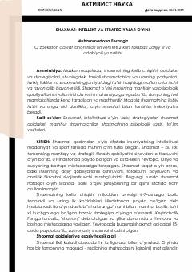

SIShaxmat o'yinining tarixi, qoidalari va uning inson intellektiga ta'siri haqida qisqacha qo'llanma.
Ushbu maqolada shaxmat o'yinining tarixi, qoidalari va strategik asoslari batafsil yoritilgan. Shuningdek, shaxmatning inson aqliy qobiliyatlariga, xususan, analitik fikrlash va xotiraga bo'lgan ijobiy ta'siri tahlil qilinib, taniqli grossmeysterlar faoliyati haqida ma'lumotlar keltirilgan.